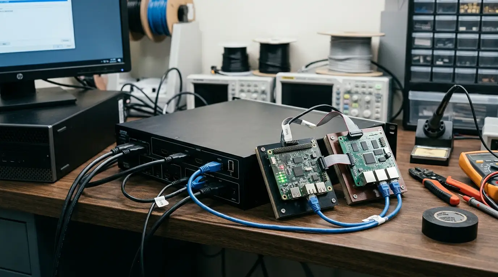

Videotron
Mengenal Sistem Sinkronisasi Konten pada Layar Videotron
Ingin tahu cara kerja sinkronisasi konten pada videotron kantor? Simak peran HDMI processor dan cara menghubungkannya ke PC, konsultasikan sekarang.
Baca Selengkapnya →